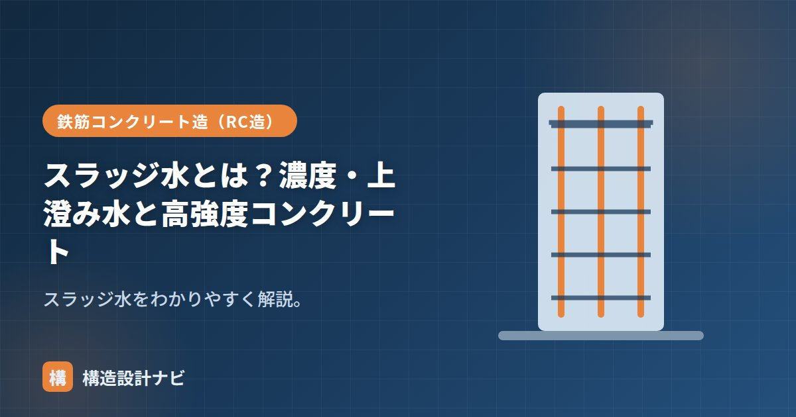

スラッジ水とは？濃度・上澄み水と高強度コンクリート

スラッジ水とは、生コンクリート工場でミキサーや運搬車を洗った水を回収・処理した水（回収水）のうち、セメントなどの微粒分を含んだ水のことです。練混ぜ水の一部として再利用され、資源の有効活用や排水の削減に役立っています。ただし、含まれる固形分の量によっては品質に影響するため、使用にあたっては濃度の管理と用途に応じた使い分けが欠かせません。
- スラッジ水は回収水のうち微粒分（スラッジ固形分）を含む水
- スラッジ固形分率は品質確保のためおおむね3%以下に管理する
- 高強度コンクリートなど高品質が求められる場合は使用が制限される
意味
生コン工場では、出荷後にミキサー車のドラムや工場設備を洗浄しますが、その洗浄水をそのまま排水してしまうと環境負荷や処理コストの問題が生じます。そこで洗浄水を沈殿槽などで処理し、練混ぜ水として再利用する仕組みが一般的に取られています。この回収水は、上澄みの上澄み水と、沈殿しきらない微粒分（スラッジ固形分）を含んだスラッジ水に分けられます。
濃度（スラッジ固形分率）
スラッジ水に含まれる固形分の割合をスラッジ固形分率といい、品質のため3%以下に管理します。固形分が多いと、単位水量・強度・流動性に影響するため、濃度管理が重要です。
スラッジ固形分は主にセメント分を含むため、量が多いコンクリートに配合されると、単位水量の計算が狂ったり、練混ぜ水として計画した以上の微粉が加わることで強度・スランプに影響が出たりすることがあります。そのため生コン工場では、スラッジ水の濃度を定期的に測定し、規定値を超えないよう管理しています。
上澄み水との違い
| 上澄み水 | スラッジ水 | |
|---|---|---|
| 状態 | スラッジを沈殿させた澄んだ上部の水 | 微粒分（固形分）を含む水 |
| 扱い | ほぼ普通の水として使える | 固形分率を管理して使う |
沈殿槽の中で、重い固形分は下に沈み、上部には比較的澄んだ水（上澄み水）が残ります。上澄み水は不純物が少ないため、上水道水に近い感覚で練混ぜ水に使えますが、スラッジ水は固形分を含むぶん、使用量や配合への影響を考慮する必要があります。
高強度コンクリートとの関係
高強度コンクリートや高品質が求められるコンクリートでは、品質を安定させるためスラッジ水の使用は制限され、上水道水や上澄み水を使うのが基本です。高強度コンクリートは水セメント比の管理がシビアであり、意図しない微粒分の混入は強度のばらつきにつながりかねないため、使用する水の種類にも通常より厳しい配慮が必要になります。
リサイクル水を使うメリットと注意点
回収水の活用は、排水処理の負担軽減や上水道使用量の削減につながり、環境面・コスト面で生コン工場にとってメリットがあります。一方で、品質を安定させるには濃度管理の徹底が前提となるため、生コン工場の品質管理体制がしっかりしているかどうかも、間接的に構造体コンクリートの品質に関わってきます。
スラッジ水の使用は工場の管理下で行われるものであり、現場側で直接コントロールできるものではありません。品質に不安がある場合は、納入される生コンの試験成績書やJIS認証工場かどうかの確認を行うことが実務上の基本的な対応になります。
Q1. スラッジ水は環境に良い取り組みなのですか。
洗浄排水をそのまま流さず再利用する点で、資源の有効利用や排水負荷の低減に寄与する取り組みといえます。ただし品質管理を伴って初めて成立する仕組みである点に注意が必要です。
Q2. 現場でスラッジ水の使用有無を確認できますか。
基本的には生コン工場側の配合・品質管理の範囲ですが、必要に応じて配合計画書や工場の品質管理資料で使用状況を確認することは可能です。特に高強度コンクリートなど品質要求が厳しい場合は、事前に工場と協議しておくとよいでしょう。
スラッジ水は現場側からは見えにくい工程なので、私は品質にシビアな部材を扱う工事では、配合計画書の練混ぜ水の欄をただ確認するだけでなく、生コン工場の回収水管理の実施状況までヒアリングするようにしています。図面や仕様書には出てこない、実務者ならではの確認ポイントです。
まとめ
- スラッジ水は回収水のうち微粒分を含む水。練混ぜ水に再利用する。
- スラッジ固形分率は3%以下に管理する。
- 上澄み水は澄んだ水。高強度コンクリートではスラッジ水の使用を制限する。
- 品質は生コン工場の管理体制に左右されるため、必要に応じて資料で確認する。